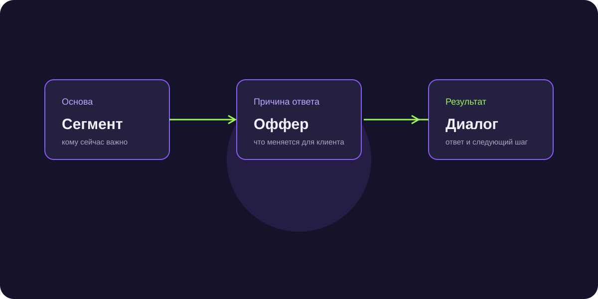

Нейросети для B2B-маркетинга: создание контента и лид-магнитов с высокой конверсией
Простые лид-магниты («скачайте бесплатный чек-лист») больше не работают в B2B. Разбираем, как с помощью нейросетей создавать ценные отраслевые материалы.

Короткий ответ
Нейросети для B2B-маркетинга — это применение языковых и аналитических моделей для быстрого создания экспертного контента высокой плотности: отраслевых бенчмарков, шаблонов ТЗ, калькуляторов окупаемости и персонализированных аудитов, привлекающих внимание платежеспособных ЛПР.
Форматы лид-магнитов, которые вызывают доверие директоров
Корпоративные заказчики ценят время и цифры. Лучше всего конвертируют:
- Отраслевые бенчмарки и статистика средних затрат по рынку.
- Интерактивные аудиты бизнес-процессов с персональным отчетом.
- Шаблоны технических заданий и регламентов для закупки.
Ускорение создания контента экспертного уровня в 5 раз
Вместо недель ожидания копирайтеров маркетолог загружает в ИИ тезисы технического директора и получает готовую статью с правильной терминологией и структурой.
Персонализация лид-магнита под конкретную отрасль
ИИ адаптирует один базовый гайд под 10 смежных ниш: логистика, строительство, ритейл, заменяя примеры и терминологию под реалии конкретного читателя.
Частые вопросы по теме
Не выглядит ли контент от нейросети водянистым?
Если задать фактуру и четкие ограничения (без вводных слов и общих советов), текст получается емким и экспертным.
Как защитить материалы от копирования конкурентами?
Добавляйте в контент уникальные данные ваших реальных клиентских кейсов и брендированные расчетные таблицы.
Снижение стоимости лида на аудит на 48%
Запуск серии узконишевых отраслевых отчетов, созданных с участием ИИ, позволил консалтинговой компании привлечь 340 заявок от директоров заводов.